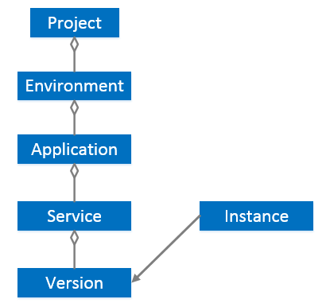

Multi-environment isolation between microservice instances
When doing service discovery, developers need to understand that the microservice can discover instances of those other services. ServiceComb provides hierarchical instance isolation.
Microservices instance hierarchical management
To understand the isolation level between instances, you first need to understand a well-established microservice system structure defined by ServiceComb:

In the microservice system structure, the top layer is the “project”, which is divided into multiple tenants under the project. The tenant contains multiple applications, and each application contains multiple environments, that is, the test and production environments can be separated. In a particular environment of a particular application, there are multiple microservices, and one microservice can have multiple versions at the same time. The above is the scope of all static metadata. A specific version of a particular service contains multiple microservice instances registered at runtime, because the information of the service instance is dynamic at runtime because of system scaling, failure, etc. The change, so the routing information of the service instance is again dynamic data. By hierarchically managing these data for microservices, this is natural to achieve logical isolation between instances.
* Project corresponds to the project created under each region of Huawei cloud. Different projects are isolated from each other. If there is no new project under the region, it represents the region; for example, create a project named tianjing in North China (cn-north-1), if you want to register the microservice to the project, you can configure it in the microservice.yaml file：
servicecomb:
credentials:
project: cn-north-1_tianjing
-
Environment indicates the current environment of the microservice instance. You can configure the current instance environment through service_description.environment in the microservice.yaml file.
-
Application represents a logical entity of a software application, representing a computer software application that has a business function presented to the user. The application name can be configured in the microservice.yaml file via the APPLICATION_ID.
-
Service is a description of the functional objects that are accessed on demand. There are multiple services under one application, and each service calls each other. The service name can be specified in the microservice.yaml file by service_description.name.
-
Version indicates the current service version. There may be multiple versions under one service. The current microservice version can be configured in the microservice.yaml file through service_description.version. When the consumer accesses, the default access is based on the routing rule, which can set by servicecomb.references.[providerName].version-rule in consumer.
Typical scene
Inter-application isolation and cross-application calls
Function introduction
In the ServiceComb framework, an application contains multiple microservices. The same microservice instance can be deployed as a public service to multiple applications by specifying a different APPLICATION_ID.

Different microservice instances, by default, are only allowed to call each other in the same application. When users need to call microservices between different applications, they need to enable cross-application calling.
Configuration instructions:
- To enable cross-application calls, you first need to enable cross-application call configuration in the microservice.yaml file on the provider side. The configuration items are as follows:
service_description:
properties:
allowCrossApp: true
- When the Consumer side specifies the microservice name to call the provider, it needs to add the application ID to which the provider belongs. The format changes from [microserviceName] to [appID]:[microserviceName].
Code example:
Assume that the application to which the consumer belongs is helloApp, the application to which the provider belongs is hellApp2, and the name of the microservice is helloProvider.
* RestTemplate call mode
When the consumer side develops the microservice consumer in the RestTemplate mode, you need to change [microserviceName] to [appID]:[microserviceName] in the called URL, as follows:
RestTemplate restTemplate = RestTemplateBuilder.create();
ResponseEntity<String> responseEntity = restTemplate.getForEntity(“cse://helloApp2:helloProvider/hello/sayHello?name={name}”, String.class, “ServiceComb”);
- RPC call mode
When the consumer side develops a microservice consumer in RPC mode, the declared service provider proxy is as follows:
@RpcReference(schemaId = “hello”, microserviceName = “helloApp2:helloProvider”)
private Hello hello;
Cross-application calls are the same as calling microservices under the same application:
hello.sayHello(“ServiceComb”);
Typical scene
Development environment is isolated and rapidly developed
Function introduction
By setting the environment, the ServiceComb framework can mark microservice instances as development, testing, acceptance, and production environments, and achieve natural isolation at the instance level. When the client looks for a server instance, it can only find server instance under the same environment.

ServiceComb is strictly dependent on the contract when designing, so under normal circumstances, the contract has changed, you must modify the version of the microservice. However, if current is still development mode, then modify the interface is a very normal situation, when the modification is completed and the current service is started again, the newly generated contract and the old contract saved on the Service Center will conflict and report an error, causing the startup to fail, It is obviously unfriendly to developers by modifying the microservice version number or by deleting the cached data of the service on the Service Center each time.
The ServiceComb framework supports rapid debugging of microservices in the development state by configuring the environment as development. When the interface is modified (the schema has changed), restart can be registered to the service center without modifying the version number.
But if a consumer has already called the service before the restart, then the consumer side needs to be restarted to get the schema of the latest provider; for example, A->B, the B interface has been modified and restarted, then A is still using B's previous schema, The call may be in error. to avoid an unknown exception and A needs to be restarted.
Configuration instructions:
Only the following enumerated values are supported: development, testing, acceptance, production. If not configured, the default value is "" (empty).
Method 1: Set by the JVM startup parameter -Dservice_description.environment=development (enumeration value);
Method 2: Specify by microservice.yaml configuration file:
service_description:
environment: development
- Method 3: Specify by environment variable SERVICECOMB_ENV (only for windows system), if it is development state, its value is configured as development;
Typical scene
Three centers in two places
Function introduction
In the scenario of deploying services across regions in a three centers in two places solution, the same services exists in multiple availableZones. It is necessary to implement the application in the same AZ with priority. If there is a problem with the same AZ, it must be able to access another AZ. To ensure the reliability of the service.
ServiceComb provides data center configuration to partition and manage microservices. The data center contains three attributes: servicecomb.datacenter.name, servicecomb.datacenter.region, servicecomb.datacenter.availableZone, data center information does not provide isolation capabilities, and microservices can discover instances of other data centers. However, you can prioritize sending messages to a specified zone or zone by enabling instance affinity.

When the client is routing, the request will be forwarded to the instance with the same zone/region, and then the instance with the same region but different zones. When they are all different, select one according to the routing rules. Affinity is not logical isolation. As long as the network between the instances is interconnected, it is possible to access it; if the network is unreachable, the access will fail.
When the cloud is deployed on the Huawei cloud, the values of the region and the availableZone can be associated with the Huawei cloud region (for example, cn-north-1) and the available region. However, because the different regions on the Huawei cloud do not communicate with each other, the network is not interconnected, so it does not support cross-region access; in addition to the region value corresponding to Huawei cloud, you can also define other values by yourself, and adjust accordingly according to the actual situation, which is very flexible.
Configuration instructions:
servicecomb:
datacenter:
name: mydatacenter
region: my-Region
availableZone: my-Zone